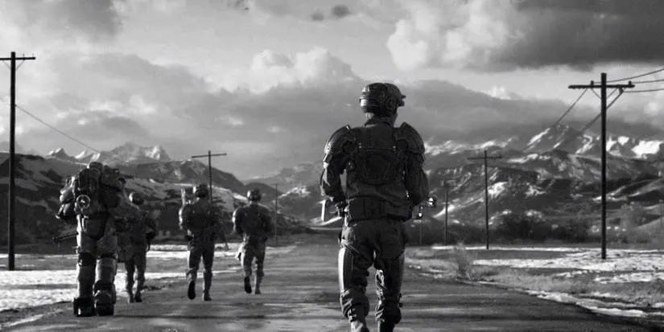
A Fallout 4 az egyetlen Fallout játék (legalábbis 2026. 11. 13.-áig), ami az atomháború (Great War) előtt kezdődik. A játékos betekinthet a háború előtti életbe körülbelül 10-15 percig mielőtt ledobnák a Kínaiak az atombombáikat a Bostoni területre. Miután felszólalnak a bombariadók, a játékos karaktere belép a Vault 111-be. Ez egy atomcsapásoktól védő bunker, melyben krio-fagyasztó kapszulákban (nagyon hideg gázokkal teli kamra) tartósítják a háború előtti túlélőket, hogy az atomcsapások után visszatérhessenek a felszínre. Miután lefagyasztják a játékost, egy bizonyos idő múlva megnyitják az előtte lévő kapszulát, melyben a felesége van, őt lelövik, majd ellopják a játékos gyermekét, melynek Shaun a neve. Ezután újra aktiválódik a játékos kapszulája, majd egy rövidebb idő után megint felkel. Ezután az Egyedüli Túlélő néven ismert karaktere a játékosnak (Sole Survivor - mivel lelövik a feleségét, ellopják a gyerekét és rajta kívül mindenki halott a bunkerben) elhagyja a bunkert, majd a felszínre megy.
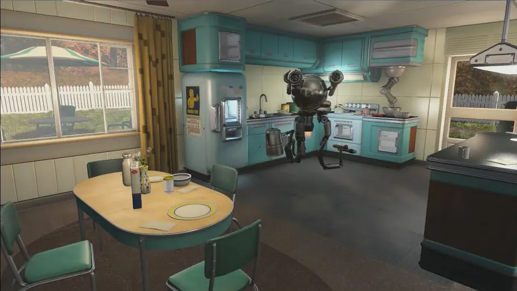
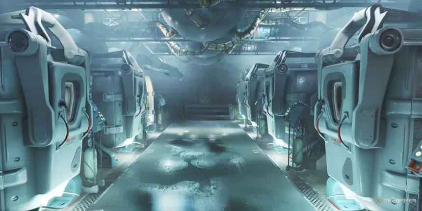
 félúton Concord és Sanctuary közt.")
Miután a játékos kijut Vault 111-ből, egyből észreveheti, hogy a világ sokat változott a csapások után. A fű már nem zöld, a fákból sokkal kevesebb van, valamint nem hallja a madarakat sem, kivéve egypár mutált hollót a bejárat mellet, amelyek nem is biztos, hogy hollók. A játékos ezután visszatér az otthonához Sanctuary-ben, ahol megtalálja a régi, háború előtti robotját, egy Mr. Handy-t Codsworth néven, aki még mindig próbálja rendben tartani a házat. Az ezután következő interakcióban a robottal megtudjuk, hogy a hábotú óta már több, mint 200 év telt el. Ezután a robot azt javasolja, hogy a gyerekünk után próbáljunk Concord-ban keresni. Félúton Concord felé a játékos találkozhat egy kutyával (Dogmeat a neve), ami nem volt kitéve súlyos radioaktív sugárzásnak, így nem ellenséges egyből. Ezt a kutyát a játékos magánál tarthatja társként. Concord-ba érve, a játékos találkozik egy tűzharccal a helyi fosztogató banda és egy csoport túlélő közt. Ebben a játékban már nem olyan szabadok a történetbeli választások, mint New Vegas-ban, így a játékosnak muszály segítenie a túlélőknek. Miután a játékos likvidálja a helyi ellenfeleket, valamint még egy Deathclaw-t is, a túlélők bemutatják magukat és kiderül, hogy ők a Minutemen csoport maradéka, miután súlyos veszeségeket szenvedtek (erről még több lesz a 2. fejezetben).
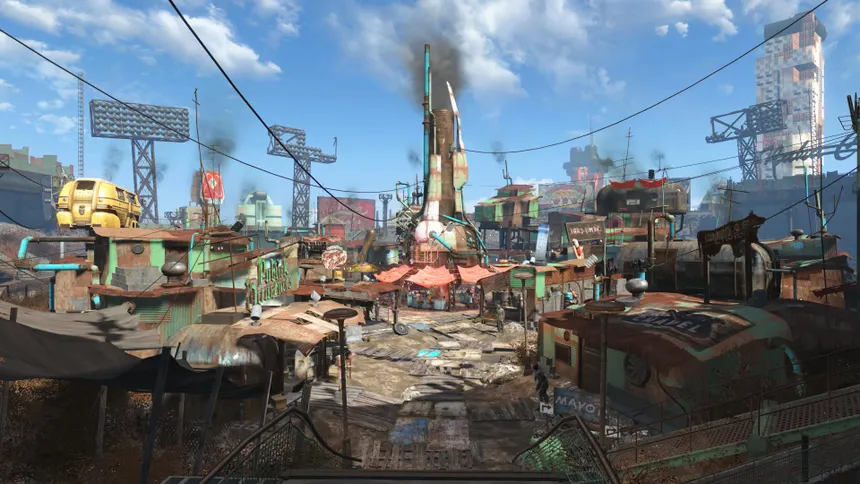
Az egyik Minutemen-es egy súlyos kábítószerek által okozott látomás miatt azt gondolja, hogy a játékos fia a Boston maradványainak területének legfontosabb településében, Diamond Cityben lesz, ezért a játékos elkezdi az útját a város felé. Amikor a játékos a bejárathoz ér, találkozik ott egy újságíróval, akit kizártak a városból hamis hírek terjesztésének a vádjával, Piper Wright-tal. Miután meggyőzi a játékos és Piper, hogy egy fontos kereskedő van a kapunál, az őrök visszaengedik Piper-t, valamint beengedik a játékost is. Ezután Piper azt javasolja a játékosnak, hogy egy helyi detektív, Nick Valentine segítségével keresse tovább a gyermekét. Miután a játékos a Valentine Detective Agency irodájába lép, arról értesül, hogy a detektívet elrabolta egy helyi banda és egy másik helyi Vaultban tartja, ezért a játékosnak meg kell mentenie. Mikor a játékos megtalálja Valentine detektívet, kiderül (legalábbis a játékos számára), hogy ő egy második generációs synth (szintetikus ember). Miután a játékos megmenti őt, Valentine detektív segít neki megtalálni a felesége gyilkosát és a gyermeke elrablóját. Kiderül, hogy a célpontod Hagen Erődnél (Fort Hagen) van. Itt a játékosnak sok első generációs szintetikus emberen keresztül kell harcolnia, mielőtt találkozik a keresettel, Conrad Kelloggal. Itt a játékos dönthet, hogy megöli-e vagy sem. Én mindig megölöm ahogy meglátom, úgyhogy nem tudom, hogy mi a kimenetele a békés útnak. Ezután az is kiderül, hogy hogyan tudsz eljutni a gyerekedhez, aki egy titkos föld alatti építményben van. Ennek az épületnek az eléréséhez viszont kell építened egy készüléket, amelyet csak az egyik fő csoport segítségével tudsz megépíteni. Hasonlóan New Vegashoz, a második fejezet itt is erről fog szólni.
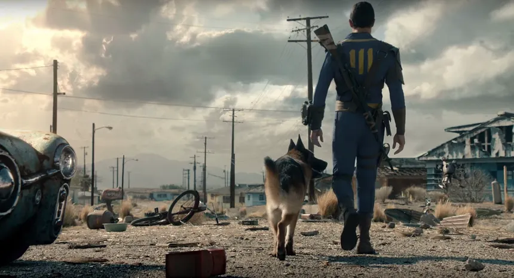
A Fallout New Vegas-beli Mojave-val ellentétben Bostonban (Néha Commonwealth néven emlegetett területen) nincs egyik csoportnak sem túlnyomó befolyása. A legbefolyásosabb csoport sem teljesen egyértelmű - az Institute szintetikus emberei kémkednek a helyi lakosságon, így az Institute sokat tud, viszont a helyiek vadásszák őket. A Minutemen csoport a régi csúcsának töredékére esett veszteségeik miatt, viszont a helyiek kedvelik őket (nagyrészt). A Brotherhood of Steel-nek pedig túlnyomó katonai ereje van a Commonwealth-ben és ők az egyetlen csoport, akinek van egy működő légiereje, viszont a lakosok nem túlságosan kedvelik őket. A Railroad sok tudással rendelkezik, viszont kevesen vannak és nem tudnak túl sokat tenni. Emiatt a játékos döntései nagyban befolyásolják nem csak a Commonwealth jövőjét, hanem a környező területekét is, míg a Nyugati Partnál játszódó New Vegas-ban a környező erős nemzetek miatt nem feltétlenül tudnak tovább nyomulni a játékos által választott csoportok, így összességében a játékos hatása mérsékeltebb New Vegas-ban a Fallout 4-hez képest. Ebben a játékban is van egy finálé, viszont it többféle csatában kell részt vennie a játékosnak (erről több a 3. fejezetben).
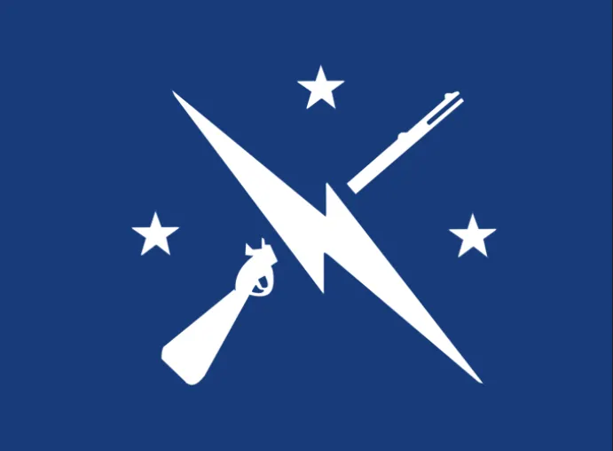
A Minutemen az első nagyobb csoport, amivel a játékos találkozik egy átlagos végigjátszásban. Ők keverednek tűzharcba Concord-ban a helyi fosztogatókkal a játék második fő küldetésében. A csoport működése egy önkéntes polgárőrséghez hasonlítható, amelynek tagjai hétköznapi emberek: farmerek, telepesek, kereskedők és egykori katonák, akik fegyvert ragadtak, hogy megvédjék otthonaikat a fosztogatóktól, a szupermutánsoktól és más fenyegetésektől. A Minutemen egykor a Commonwealth egyik legerősebb és legbefolyásosabb szervezete volt. Legnagyobb céljuk egy egységes, békés és biztonságos közösség létrehozása volt, ahol a települések kölcsönösen segítik egymást. Azonban a belső konfliktusok, a bizalom elvesztése és a Quincy elleni támadás (A legerősebb fosztogatócsoport, a Gunners, megostromolták a várost) következtében a szervezet szinte teljesen összeomlott. Amikor a játékos találkozik velük, az egyetlen életben maradt kiképzett Minuteman-es az Preston Garvey, akitől a játékos a különböző Minuteman küldetéseket kaphatja. A Minutemen küldetések túlnyomó része arról szól, hogy a játékosnak segítenie kell egy helyi túlélőcsoportnak, akik a küldetés után a Minutemen védelme alá kerülnek. A Minutemen-es milíciának jellegzetes fegyvere a lézermuskéta. A játékos a legnagyobb vezetői pozíciót (General) kapja Preston Garvey-tól miután megcsinál nekik egypár küldetést. Fő településük kezdetben Sanctuary, majd egy küldetés után Boston déli részén található várnak romjai közt lesz.
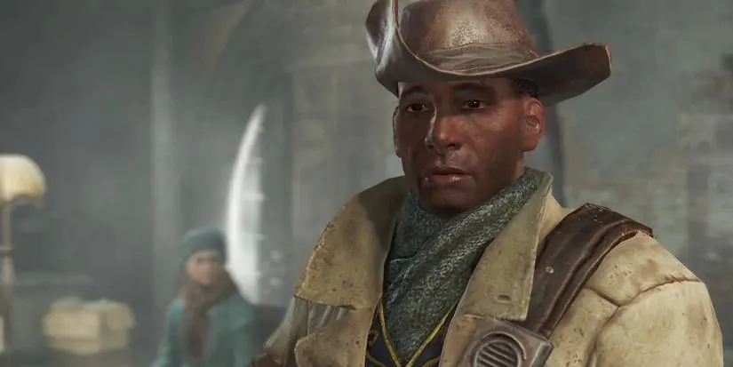
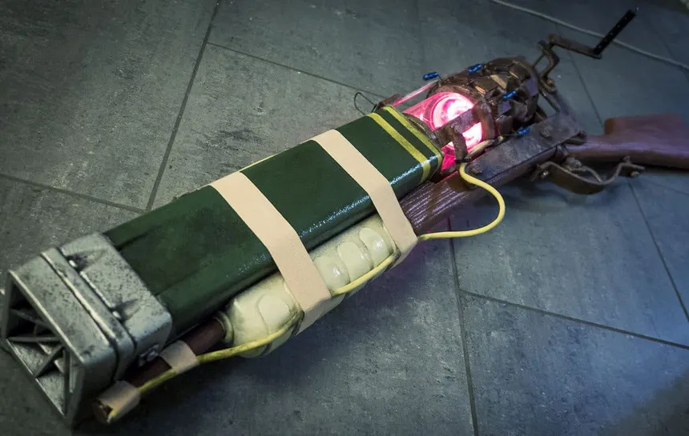
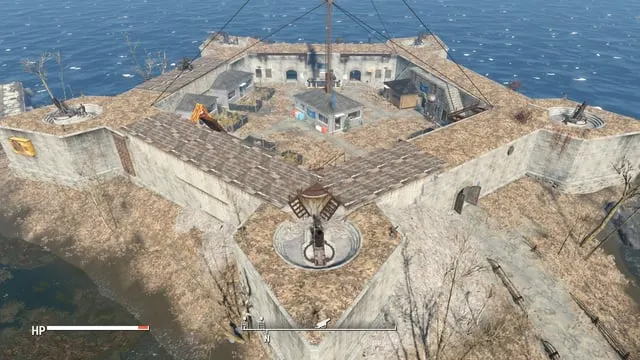
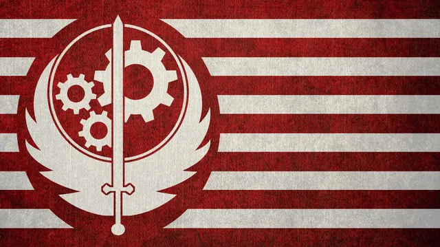
A Fallout New Vegas-ban található Brotherhood of Steel-lel ellentétben ez a csoport már nem csak bújkál egy bunkerben. Ez a Brotherhood of Steel (Acél Testvériség) a legerősebb csoport katonailag a Commonwealth-ben. Egy szigorúan hierarchikus, katonai szervezet, amelynek elsődleges célja a háború előtti technológia megőrzése, összegyűjtése és ellenőrzése. A Testvériség úgy véli, hogy az emberiség pusztulását a felelőtlen technológiai fejlődés és a nukleáris fegyverek okozták. Meggyőződésük szerint a fejlett technológiát csak olyan szervezet birtokolhatja, amely képes felelősségteljesen használni azt. A Brotherhood of Steel erősen ellenséges viszonyban van az Institute-tal és a Railroad-dal. A csoport ezen kívül még különösen ellenséges a szintetikus emberekkel, azaz a synth-ekkel szemben, mivel úgy gondolják, hogy azok veszélyeztetik az emberiség jövőjét. A játékos velük a Cambridge-i rendőkapitányságon találkozik először, vagy Conrad Kellogg megölése után láthatja őket. Ha a játékos úgy dönt, hogy segít nekik, Paladin Danse segítségével beléphet a soraikba. A Testvériségi katonák nagyja nehézpáncéllal van felszerelve és nehézfegyverzetet (rakétaindítók, minigunok) használ. A főhadiszállásuk a Prydwen léghajón van, mely a Bostontól keletre található repülőtér felett repül Conrad Kellogg-al való találkozásunk után. Vezérük neve Arthur Maxson.
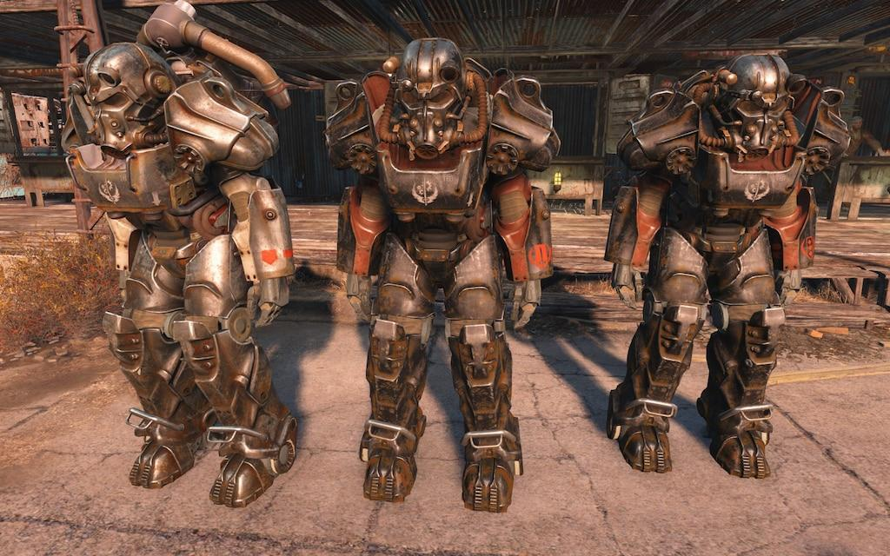
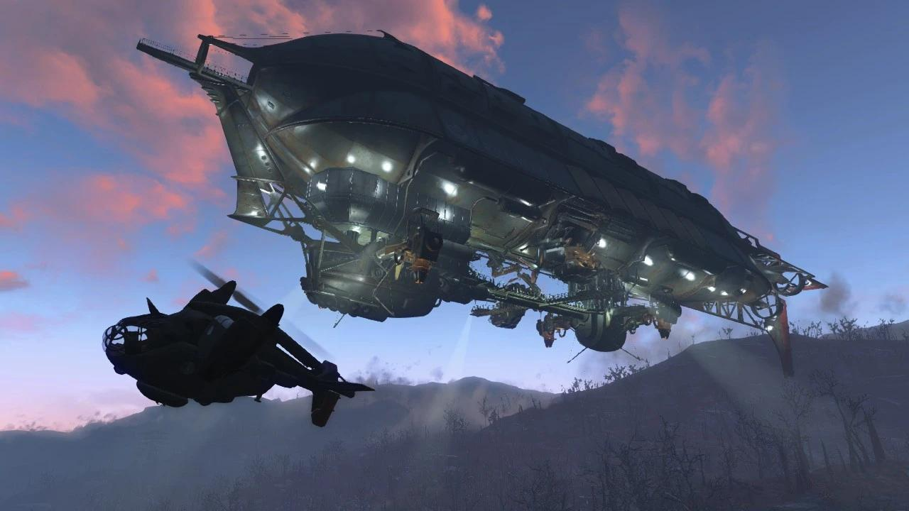
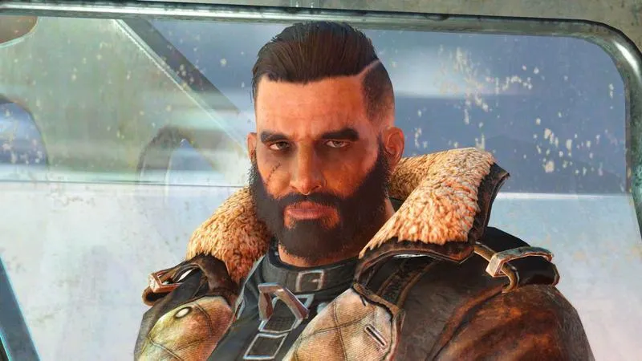
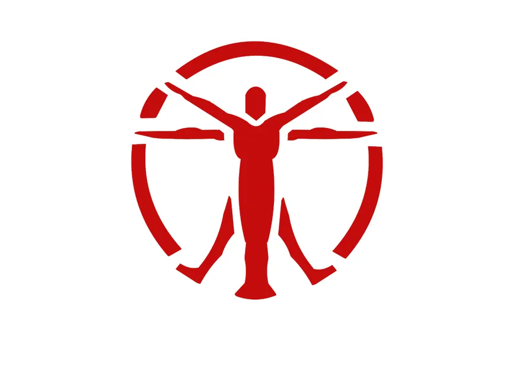
Az Insitute (Az Intézet) egy titokzatos, technológiailag nagyon fejlett csoport, akik egy föld alatti kutatóállomáson élnek és a háború előtti technológia továbbfejlesztésével és az emberiség jövőjének alakításával foglalkoznak. Az Intézet tagjai úgy vélik, hogy a felszíni világ menthetetlenül elkorcsosult, ezért az emberiség valódi jövőjét nem a Commonwealth újjáépítése, hanem egy új, technológiailag fejlett civilizáció létrehozása jelenti. Ők a felelősek a szintetikus emberek létrehozásáért, mind az első, második, valamint a harmadik generációért is. Ezzel szinte végtelen emberállományuk van, mivel százával tudhák ezeket a robotokat összeszerelni naponta. A felszíni lakosság nem túlságosan kedveli őket, mivel a technológia fejlődés érdekében gyakran lopnak technológiát a felszíni városokból, valamint embereket is lopnak, melyeken különféle módokon kísérleteznek. Minden felszíni csoporttal ellenséges viszonyban állnak, viszont sok kémük van a felszínen. A harmadik generációs szintetikus robotok teljesen ugyanúgy néznek ki, mint a sima emberek. Csak boncolással bizonyítható az, hogy ők nem azok. Az Intézmény ezeket a robotokkal szolgaként bánik, viszont egyesek szerint a harmadik generációs modellek mesterséges intelligenciájának vannak érzései. A játékos ezzel a csoporttal a játék közepe fele találkozik, miután megépíti a teleportáláshoz szükséges készüléket. Az Institute gyalogos egységei műanyag páncélt viselnek és lézerpuskákat használnak. Vezetőjük neve Father, viszont lehet, hogy ő ismerősebb a játékosnak, mint elsőre tűnik.
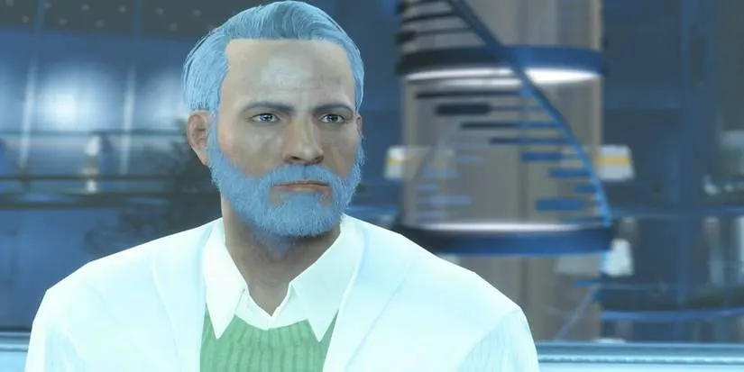
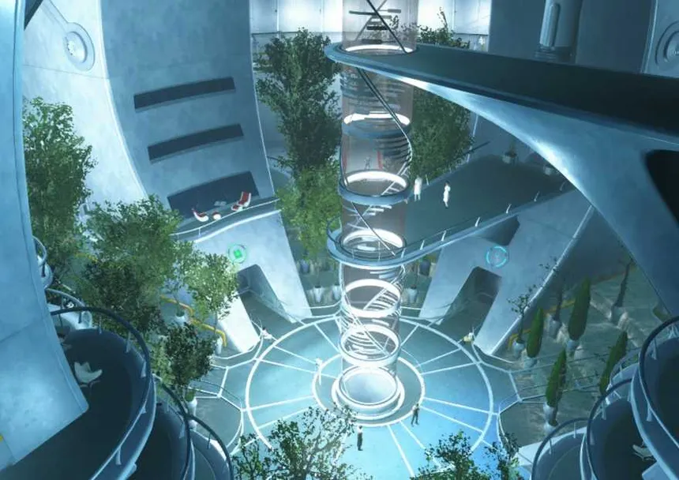
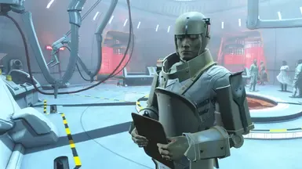
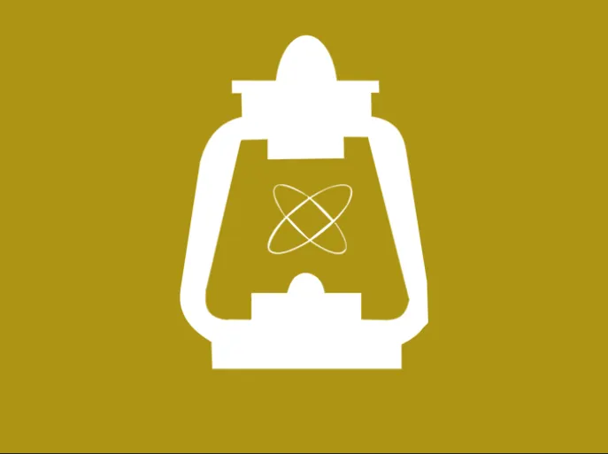
A Railroad Fallout 4 legkisebb csoportja. Egy titkos ellenállási szervezet, amelynek elsődleges célja a harmadik generációs Synth-ek felszabadítása az Institute "elnyomása" alól. A Railroad tagjai úgy gondolják, hogy a Synth-ek nem egyszerű gépek vagy mesterséges eszközök, hanem érző, gondolkodó lények, akik megérdemlik a szabadságot, az önálló életet és az emberi méltóságot. A szervezet a titkos műveletekre, a kémkedésre, a szabotázsra és a mentőakciókra épít. Működésük sok tekintetben egy földalatti ellenállási mozgalomhoz hasonlít. A játékosnak egy titkos útvonalat kell követnie és egy kódot kell tudnia ahhoz, hogy megtalálja őket. A Minutemen-en kívül minden nagy csoporttal ellenséges viszonyban állnak. A Railroad tagjai különféle páncélokat és fegyvereket használnak, küldetéseik során a játékosnak fel kell szabadítania néhány harmadik generációs szintetikus embert. Vezetőjük neve Desdemona. A főhadiszállásuk a Szentháromság Templom alatt található. Nem tudok sok jót mondani erről a csoportról, mert nem kedvelem őket.
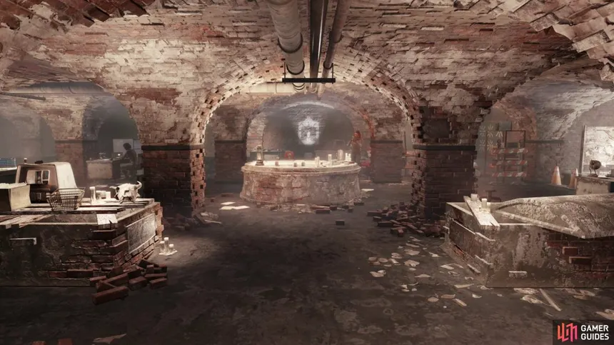
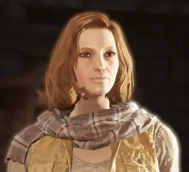